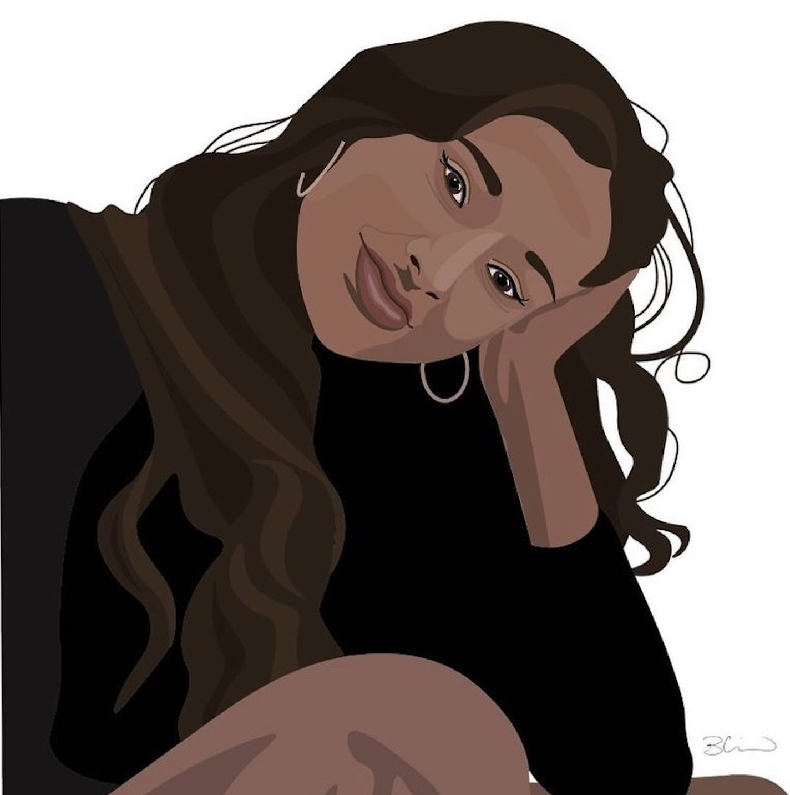
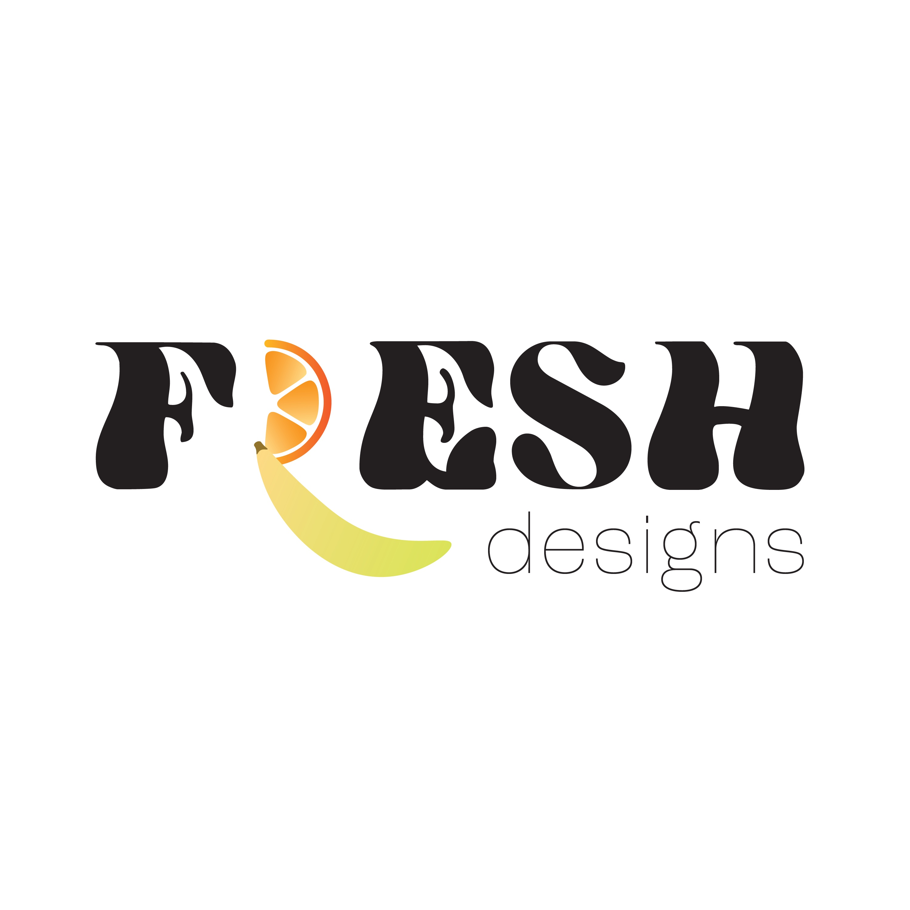
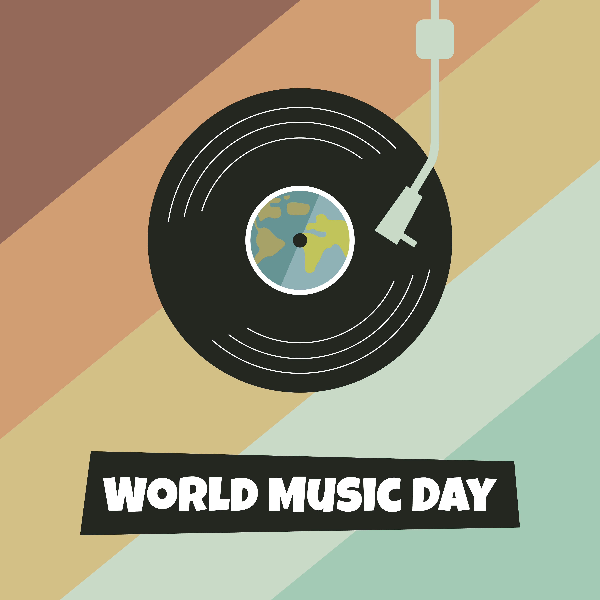
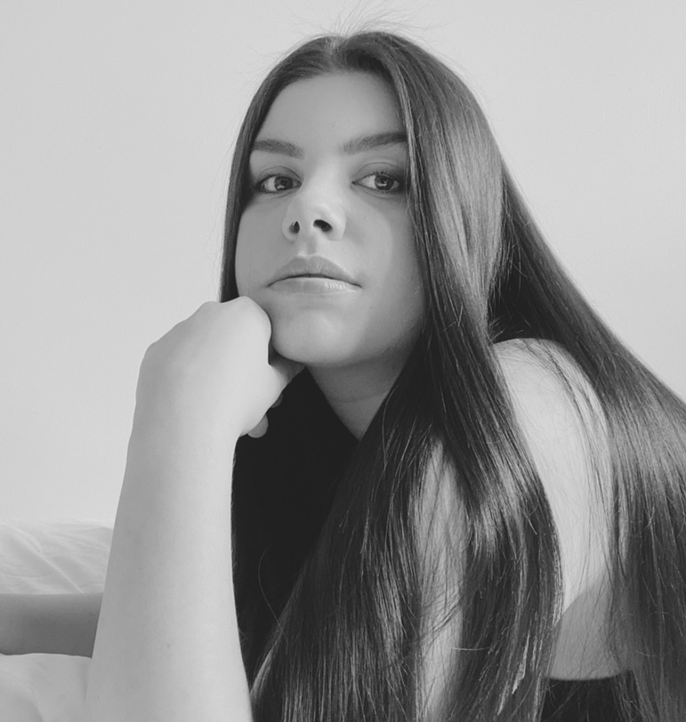

About Me
From an early age I always knew I would end up in the arts in some form – an indicator being that I would normally spend more time on the visual elements rather than the actual research. In 2021, I graduated from Carleton University with a Bachelor’s in Global Media & Communications. With this degree, I aspire to combine my love for travel, continuous learning and graphic design, ultimately fulfilling my dream of moving abroad and working in a design studio. One of my biggest achievements has been becoming the Junior Graphic Designer for the Algonquin Student’s Association. With my experience at the SA, I’ve gained a lot of confidence in my design skills and am constantly learning from my graphic designer collegues. One day, I hope to take my design skills abroad and work at an agency overseas.
